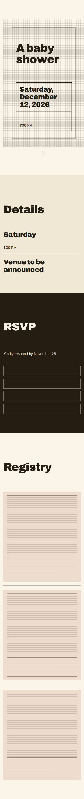
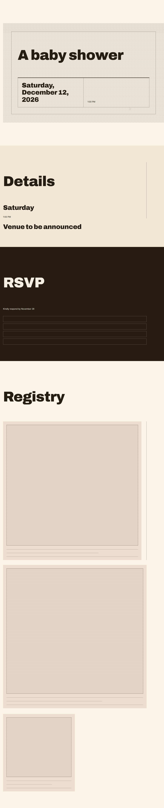
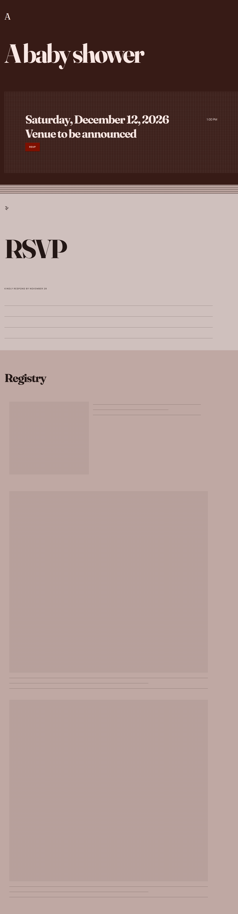

Phase 4D live integration smoke — locally grown baby shower
Diagnostic/product evidence only; not a benchmark and no generalization claim.
One batch, one event, run once. Each image is the exact persisted ResolvedDesignSpec
rendered through the production EventPage renderer with its final verification
overrides — not the raw tree and not the pre-verification spec.
Concept 1
Premise title
Tended Welcome
Organizing idea
The celebration unfolds like something thoughtfully cultivated, allowing growth to shape the guest’s sense of anticipation and care. Produce and garden character feel integral because they belong to that progression.
Presentation name
Tended Welcome
Presentation description
A calm, cultivated welcome that unfolds with quiet warmth, thoughtful care and purposeful garden character.
mobile · 390

desktop · 1280

Concept 2
Premise title
Market Welcome
Organizing idea
The site welcomes guests with the immediacy of a beautifully presented market: fresh, generous and full of distinct points of interest. Its charm comes from confident arrangement and produce-led character rather than whimsy.
Presentation name
Market Welcome
Presentation description
A bright, polished market welcome with lively produce colour, generous character and a sense of discovery.
mobile · 390desktop · 1280

Concept 3
Premise title
Gathered Abundance
Organizing idea
The concept treats the shower as a generous gathering of seasonal plenty, where fullness itself communicates celebration. The emphasis is on a composed sense of richness rather than rustic excess.
Presentation name
Gathered Abundance
Presentation description
A generous harvest mood gathers seasonal warmth and tactile richness into a poised, celebratory welcome.